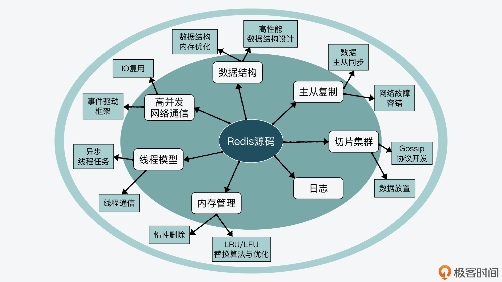
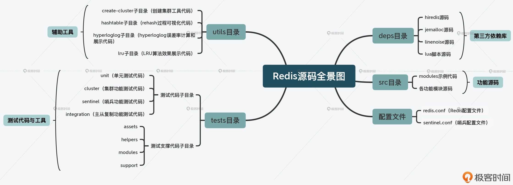

- 00 开篇词 阅读Redis源码能给你带来什么？.md
- 01 带你快速攻略Redis源码的整体架构.md
- 02 键值对中字符串的实现，用char还是结构体？.md
- 03 如何实现一个性能优异的Hash表？.md
- 04 内存友好的数据结构该如何细化设计？.md
- 05 有序集合为何能同时支持点查询和范围查询？.md
- 06 从ziplist到quicklist，再到listpack的启发.md
- 07 为什么Stream使用了Radix Tree？.md
- 08 Redis server启动后会做哪些操作？.md
- 09 Redis事件驱动框架（上）：何时使用select、poll、epoll？.md
- 10 Redis事件驱动框架（中）：Redis实现了Reactor模型吗？.md
- 11 Redis事件驱动框架（下）：Redis有哪些事件？.md
- 12 Redis真的是单线程吗？.md
- 13 Redis 6.0多IO线程的效率提高了吗？.md
- 14 从代码实现看分布式锁的原子性保证.md
- 15 为什么LRU算法原理和代码实现不一样？.md
- 16 LFU算法和其他算法相比有优势吗？.md
- 17 Lazy Free会影响缓存替换吗？.md
- 18 如何生成和解读RDB文件？.md
- 19 AOF重写（上）：触发时机与重写的影响.md
- 20 AOF重写（下）：重写时的新写操作记录在哪里？.md
- 21 主从复制：基于状态机的设计与实现.md
- 22 哨兵也和Redis实例一样初始化吗？.md
- 23 从哨兵Leader选举学习Raft协议实现（上）.md
- 24 从哨兵Leader选举学习Raft协议实现（下）.md
- 25 PubSub在主从故障切换时是如何发挥作用的？.md
- 26 从Ping-Pong消息学习Gossip协议的实现.md
- 27 从MOVED、ASK看集群节点如何处理命令？.md
- 28 Redis Cluster数据迁移会阻塞吗？.md
- 29 如何正确实现循环缓冲区？.md
- 30 如何在系统中实现延迟监控？.md
- 31 从Module的实现学习动态扩展功能.md
- 32 如何在一个系统中实现单元测试？.md
- 结束语 Redis源码阅读，让我们从新开始.md
00 开篇词 阅读Redis源码能给你带来什么？
目前在中科院计算所任职副研究员。在 2015 年的时候，我和团队开始设计实现一个高性能键值数据库。为了实现这一目标，我们调研了业界常用的多种键值数据库，并选择 Redis 作为重点研究对象。在学习 Redis 的过程中，我就通读了 Redis 的源码，尤其是 Redis 的数据结构、主从复制、RDB/AOF 等关键功能。
也正是通过阅读 Redis 源码，我发现自己对 Redis 的关键设计原理和机制，有了更加直接和深刻的理解。更重要的是，Redis 的代码设计和实现教给了我很多计算机系统的设计思路，让我受益匪浅。
2020 年，我在极客时间上开设了一门《Redis 核心技术与实战》课程，来帮助同学们掌握 Redis 的核心原理和实战应用技术。在课程的更新和学习过程中，也有不少同学说想要了解和学习 Redis 源码，但是又苦于无从下手。因此时隔一年，我又带来了一个源码课程。
这门课程会从 Redis 源码阅读的角度出发，一方面会给你介绍 Redis 关键技术的代码实现，以便你能更加彻底地理解和掌握该项关键技术。另外更重要的一方面就是，我希望通过这门课程，把我当时在阅读 Redis 源码时，体会和掌握到的计算机单机系统和分布式系统常见的设计思想，分享给你，让你也可以把这些设计思想应用到自身的项目开发中。
好了，那么接下来，我就先和你聊聊阅读 Redis 源码能给我们带来什么，也就是为什么要学习 Redis 源码。
会用 Redis 不就行了，为啥要读源码呢？
平常我们在基于 Redis 做应用开发时，可能只是将 Redis 作为一个缓存系统或是数据库来存取数据，并不会接触到源码层面的东西。比如，我们在做社交应用开发时，会将用户数据、关注信息等缓存在 Redis 中；在开发存储系统软件时，也会用 Redis 保存系统元数据。
不过，我遇到过不少做开发或是运维的团队，他们在使用或运维 Redis 时，经常会面临 Redis 性能变差、Redis 实例故障等问题，而这些问题都会影响到业务应用的运行。再者，经历过大厂面试的人也知道，很多互联网公司在招聘资深技术岗时，都会问一些跟 Redis 相关的考点问题。
也就是说，如果你不了解 Redis 源码层面的实现原理，那不管你是在实际开发中排查问题故障点，还是在技术面试中快速拆解问题的套路，都可能会受到阻碍。
我就举个简单的例子。Redis 在运行过程中，随着保存数据的增加，会进行 rehash 操作，而 rehash 操作会对 Redis 的性能造成一定影响。如果我们想定位当前性能问题是否由 rehash 引起，我们就需要了解 rehash 的具体触发时机，这就包括 rehash 的触发条件有哪些，以及在哪些操作过程中会对这些触发条件进行判断。
可是，当我们只是了解 rehash 的基本原理时，我们就只是知道当哈希表的负载因子大于预设阈值后，就会开始执行 rehash。但是，具体到 Redis 来说，我们还需要进一步了解：
- 哈希表的负载因子是怎么算的？知道了这一点，我们可以推算 Redis 的负载压力。
- 除了负载因子这一条件，是否还有其他触发条件？了解这一点，可以帮助我们结合 Redis 运行情况，推断当前是否发生 rehash。
- rehash 触发条件的判断会在哪些函数中进行调用？了解这一点很有用，可以让我们知道在哪些操作执行过程中，会判断 rehash 触发条件，进而执行 rehash。
你看，虽然从原理上说这是一个 rehash 操作，但一旦落到实际的性能问题排查时，我们却会面临很多的具体问题。
那么，要想解答这些问题，最好的办法就是阅读和学习 Redis 源码。通过学习源码，我们能进一步掌握 Redis 的实现细节，这带来的最明显收益就是，能了解 Redis 运行过程中要判断和处理的各种条件。这些细节正对应了我们在排查 Redis 性能、故障问题时的排查思路，可以帮助我们有章法、高效地解决问题。
另外，从我的经验来看，学习源码除了能帮助我们掌握 Redis 的设计细节，还能带来以下三点收获。
第一，从原理到源码，学习源码阅读方法，培养源码习惯，掌握学习主动权。
阅读源码本身是一个辛苦的过程，尤其是面对像 Redis 这样的系统软件。但是，你一旦掌握了阅读方法，进而养成了阅读习惯后，你就能从源码中掌握 Redis 的各种实现细节，建立对 Redis 的全面认识。这样一来，你就能成为一名 Redis 专家。
除此之外，一旦我们养成阅读源码的习惯，再遇到问题时，我们就会“条件反射”式地从源码中去寻找答案。而且，Redis 的代码一直在不断迭代更新，因此更新代码所对应的工作原理有时也会发生一些变化，但是又没有材料可以及时介绍代码更新带来的变化。此时，如果我们已经习惯从代码层去理解 Redis 的工作机制的话，那么，我们就能在第一时间掌握 Redis 的新发展和新变化，并可以将其应用到实际工作中。
比如，Redis 在 2020 年 5 月份推出了 6.0 版本，在该版本中，Redis 实现了多 IO 线程机制。如果我们养成了阅读 Redis 源码的习惯，就可以尽早地了解 Redis 6.0 中多 IO 线程的具体实现，并评估其可用性。
第二，学习良好的编程规范和技巧，写出高质量的代码。
学习 Redis 源码给我们带来的第二个收获，是它提供了一个经典的、使用 C 语言开发的软件系统示例，可以让我们学习掌握良好的 C 语言编码规范和技巧。
Redis 的稳定版包括 2、3、4、5，以及 2020 年发布的 6.0 版本，这些版本在实际业务中都有部署使用，其代码稳定性和健壮性也都经过了考验。因此，Redis 的源码是一份优秀的 C 语言编程学习素材。无论你是 C 语言的初学者，还是有经验的 C 语言开发者，通过学习 Redis 源码，都可以帮助你掌握编码规范和技巧。
比如，我们可以从 Redis 源码中学习功能模块单元测试的编程方法，下面的代码就显示了 Redis SDS 数据类型的单元测试，通过定义测试函数，以及宏定义开关，就可以实现针对 SDS 类型的各种操作测试。
int sdsTest() {
...
}
#ifdef SDS_TEST_MAIN
int main(void) {
return sdsTest();
}
#endif
第三，举一反三，学习计算机系统设计思想，实现职业能力进阶。
最后，学习 Redis 源码还有一个大收获，就是跟着 Redis 学习计算机系统的关键设计思想。Redis 是一个非常经典的内存数据库，它的设计与实现涉及两类计算机系统的关键技术。
一是单机键值数据库的关键技术，包括支持高性能访问的数据结构、支持高效空间利用率的数据结构、网络服务器高并发通信、高效线程执行模型、内存管理、日志机制等。这些技术是设计和实现一个单机键值数据库时都需要考虑的问题。
二是分布式系统的关键技术，包括分布式系统主从库复制机制、可扩展集群数据切片与放置技术、可扩展集群通信机制等。
Redis 在开发时，就针对上述问题进行了合理的设计和优化。因此，你通过阅读 Redis 源码，就可以充分学习到这些计算机系统的设计思想，并把它们应用到自身的项目开发中，这样进一步也能提升你的职业竞争力。
我画了下面这张图，显示了通过阅读 Redis 源码，可以学习和掌握到的计算机系统设计思想，你可以看下。

好了，到这里，你就可以发现，阅读和学习 Redis 源码，无论是对掌握 Redis 细节，成为 Redis 达人，还是养成源码阅读习惯，主动跟进 Redis 最新发展，或者是跟着 Redis 学习编程规范和设计思想，都大有裨益。
如何正确学习 Redis 源码？
但是，你在尝试阅读 Redis 源码的时候，有没有感到无从下手或是无所适从，比如说：
- Redis 源码中的功能模块很多，不清楚它们之间的逻辑关系，或是某个模块中的内容很多，很难厘清一条清晰的调用路径；
- 花费了很多时间阅读代码，但总是抓不住重点，或者是在阅读一个函数代码时，很容易陷入细节之中，无法快速抓住代码的关键部分。
其实，你之所以“无从下手”的原因，是缺少了代码结构的全景图，而出现“无所适从”的问题，是缺少阅读目标的牵引和基本原理的支撑。简单来说，就是没有掌握科学、高效的代码阅读方法。
根据我阅读 Redis 这种大型系统源码的经验，下面我就来给你提供三个锦囊妙计。
高效阅读代码的第一个要点，是要先从整体上掌握源码的结构。
这是因为，如果一开始就盯着一个代码文件看，这样就很容易陷入到细节中，无法从全局上了解到 Redis 源码的组成，也不容易分清主次。
所以，对于阅读 Redis 源码来说，我们就需要先形成一幅 Redis 源码的全景图，如下所示。

有了这张图以后，我们就可以根据自己的学习需求，查找到所要学习的代码文件。然后，我们再根据 Redis 不同的功能特性，分线条学习每个功能特性上涉及的关键技术和设计思想。
高效阅读代码的第二个要点，是一定要有目标牵引和原理支撑。
Redis 的功能模块很多，每个功能模块的实现也比较复杂，我们在阅读代码前一定要明确想要了解的目标，比如是想了解某个数据结构，还是想要了解主从复制的流程。
在确定目标后，我们还需要对相应的原理有所了解，然后再开始阅读源码。这是因为源码是原理的体现，如果对 Redis 功能的基本原理不了解，直接阅读源码，就难于理解代码逻辑，增加了代码阅读的难度。
高效阅读代码的第三个要点，是要做到先主线逻辑再分支细节。
虽然说源码是原理的体现，但是和原理相比，源码通常会考虑系统运行时的各种情况和细节。我看到有些开发人员在阅读源码时，一上来就阅读代码中的每个分支，然后在每个分支上又追到每个函数中细看。而不同分支上的函数往往又涉及其他处理细节，这样一来，就会导致自己既不容易理解代码的主要逻辑，又会感到代码不好读，容易气馁。
其实，我们在阅读代码时一定要先把功能模块的主线逻辑梳理出来，具体来说，就是先把代码执行路径了解清楚，其中的分支做好标记，不用一开始就逐行阅读。等主线逻辑清楚后，我们再学习不同分支的处理。
比如，我们在阅读 Redis 事件驱动处理框架代码时，就需要在代码中先把事件处理流程的主要步骤梳理出来，包括创建事件、监听事件、启动事件处理循环。然后，我们再去了解事件创建、监听和处理的各种细节。这样一来，代码阅读就能更加高效了。
好了，在了解了代码学习方法之后，我们可以开始深入 Redis 具体的源码模块当中，去学习不同功能特性的设计与实现了。
这门课程是怎样设计的？
说到 Redis 的功能特性，Redis 提供了 String、List、Hash、Set、Sorted Set 等丰富的数据类型，同时，Redis 的访问性能高，还能构建成主从集群、切片集群来分别提升 Redis 使用的可靠性和可扩展性。
因此，针对 Redis 的上述功能特性，我把这门课程分成五大模块，具体如下。
- 数据结构：你将学习到 Redis 主要数据结构的设计思想和实现，包括字符串的实现方法、内存紧凑型结构的设计、哈希表性能优化设计，以及 ziplist、quicklist、listpack、跳表的设计与实现等。
- 网络通信与执行模型：你将掌握 Redis server 的启动流程、高性能网络通信设计与实现、事件驱动框架的设计与实现、Redis 线程类型的设计和优化等。
- 缓存：你将了解常见缓存替换算法如何从原理转变为代码。
- 可靠性保证：你将掌握 RDB、AOF 的具体实现，分布式系统中 Raft 一致性协议的设计实现，故障切换的关键代码实现等。
- 切片集群：你将学习到 Redis 切片集群中关键机制的设计与实现，包括 Gossip 通信协议、请求重定向、数据迁移等。
并且，在学习这五类模块中的关键源码的同时，我还会给你介绍对应的计算机系统设计思想，以便你把这些设计思想应用到自己的系统开发中。最后，我还会向你介绍 Redis 源码中使用的一些编程技巧，以便你学习掌握后，应用到自己的程序开发中。

写在最后
万事开头难，对于阅读源码来说，尤其是这样。Redis 有上百个源码文件，源码文件中的代码动辄上千行。如果想彻底掌握 Redis 源码，的确需要花大量的精力和时间。
但是，掌握一个好方法，是成功做好一件事的关键。所以，在跟随学习 Redis 源码的过程中，希望你能掌握好我给出的三个学习要点：
- 获得代码全景图；
- 在阅读代码前确定具体学习目标，并做好原理准备；
- 在阅读代码时，先梳理出代码的主线逻辑，再详细学习分支细节。
最后，我还想正式认识一下你。你可以在留言区做个自我介绍，和我聊聊你目前使用 Redis 或阅读 Redis 的源码时，都存在哪些困难，或是都有哪些独特的思考和体验，我们一起交流讨论。
好了，让我们一起努力，开始 Redis 代码之旅吧。
© 2019 - 2023 Liangliang Lee. Powered by Vert.x and hexo-theme-book.